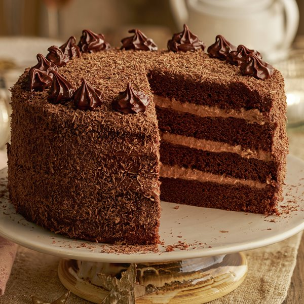

Pastís de Xocolata

Anar als ingredients |
Anar als passos
Ingredients
- 200g de xocolata negra
- 150g de mantega
- 200g de sucre
- 4 ous
- 100g de farina
Passos a seguir
- Fon la xocolata i la mantega al bany maria.
- Barreja el sucre amb els ous fins que blanquegin.
- Incorpora la xocolata fosa a la barreja.
- Afegeix la farina i barreja suaument.
- Enforna a 180°C durant 30 minuts.